Chapter 1Install and first run
Sussurro is a desktop app for macOS (Apple Silicon), Windows and Linux. It is free and open source (AGPL-3.0), needs no account and sends nothing anywhere on its own.
Download and install
Installers are on the GitHub releases page. The same page carries the browser extension (see Meetings).
| System | Files | Requirements and first launch |
|---|---|---|
| macOS | .dmg | Apple Silicon only, macOS 11 or later. The app is not notarized: the first time, right-click sussurro.app → Open, or allow it in System Settings → Privacy & Security → Open Anyway. Why. |
| Windows | .exe, .msi | Windows 10 or 11, x64, with WebView2 (built into Windows 11). The installer is not code-signed: if SmartScreen stops it, click More info → Run anyway. An antivirus may ask about sussurro-llama-server.exe the first time it runs. |
| Linux | .AppImage, .deb, .rpm | x64 with glibc 2.38 or newer (Ubuntu 24.04+, Debian 13+, Fedora 39+). To paste text you need a clipboard helper — xclip or xsel on X11, wl-clipboard on Wayland — and on Wayland the desktop's RemoteDesktop permission, or wtype / ydotool. Details. |
Two optional helpers ship inside the app: a llama-server process used by the Qwen3-ASR engine and by the bundled model. On macOS, if one of them won't start because the system quarantined it, run this once — Sussurro never removes the quarantine flag by itself:
xattr -cr /Applications/sussurro.appUpdates: Settings → About → Check for updates. Update packages are signed with the project's own key, so updating works even though the installers are not OS-signed. Sussurro checks only when you click.
The guided setup
The first launch opens a short setup over the workspace. Every step has Skip this step, and Skip setup closes it; Settings → About → Run the setup again brings it back. Upgrading from 0.6 shows a single What's new screen instead, and keeps your settings.
{kind=link}
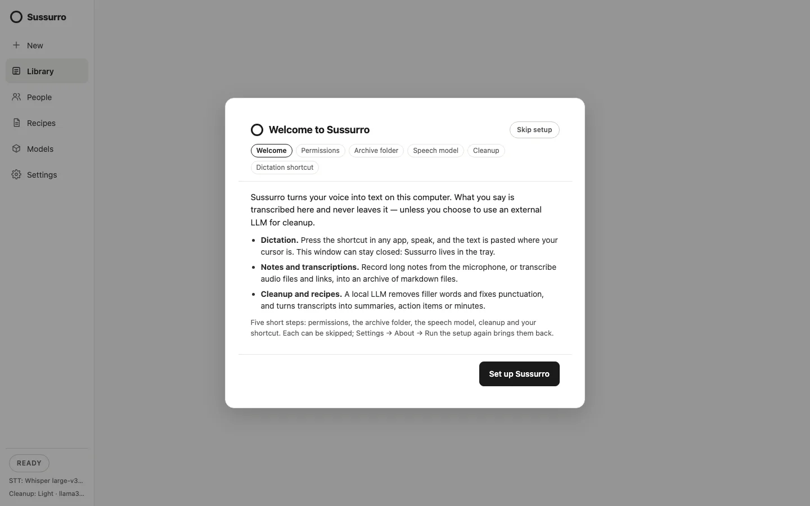
- Permissions. Microphone — Test the microphone makes the system ask now rather than at your first dictation. On macOS also Accessibility, which Sussurro needs to paste into other apps: Open System Settings, allow Sussurro, then Check again (macOS may ask to reopen the app). On Windows, allow desktop apps to use the microphone in the privacy settings.
- Archive folder. Notes, meetings and transcriptions are saved in
Documents/Sussurro. On macOS the button reads Allow access and create the folder: the system asks once for the Documents folder, here, so the question never interrupts a recording. Change… picks another folder, such as an Obsidian vault. If Documents syncs to iCloud Drive or OneDrive, the archive syncs with it. - Speech model. Choose the engine and download a model (see Speech models).
- Cleanup. Sussurro looks for LLM servers on this computer only, at their default addresses: Ollama (
localhost:11434), LM Studio (localhost:1234) and a llama.cpp server (localhost:8080). Use for cleanup picks one. If none answers, it offers the bundled model, and Get Ollama opens Ollama's download page. Cleanup is optional: without it you get exactly what you said. - Dictation shortcut. Record your shortcut and choose push-to-talk or tap-to-toggle (see Hotkey dictation).
The workspace
The window has a left rail with New, Library, People, Recipes, Models and Settings. At its foot are the Dictate button, a timer while a recording runs, and the current speech engine and cleanup profile. Closing the window hides it: Sussurro keeps running in the tray (menu: Show / Hide, Quit), so the dictation shortcut keeps working.
{kind=link}
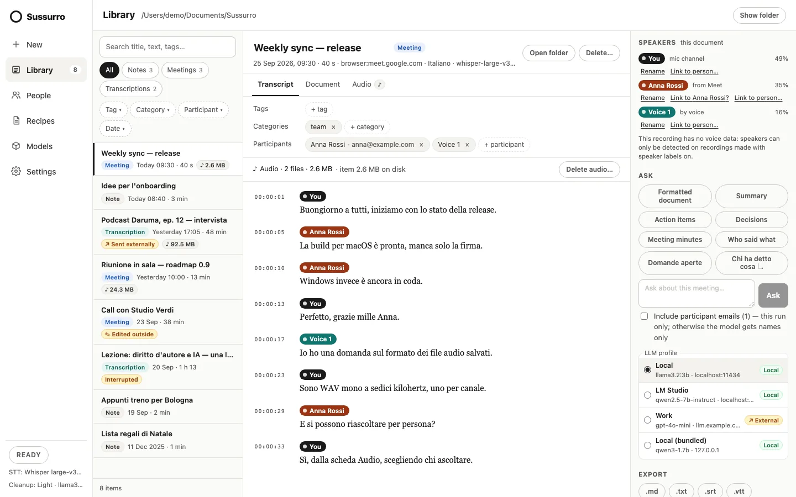
Settings has these sections: Dictation (shortcut, microphone, push-to-talk), Speech (language, whisper mode), Cleanup (level, translation, cleanup profile), Dictionary & snippets (personal dictionary, app styles, snippets, portable config), Behavior (live preview, sound feedback, voice commands, streaming typing, launch at login, dictate to file, and under Advanced the local API), Dictation history, Archive, Browser extension, Diagnostics (live timings of your last dictations — speech-to-text, cleanup, paste — what the speech engine runs on, Metal, Vulkan or CPU, memory and CPU use; nothing is saved or sent) and About (credits and licences, Copy diagnostics, Check for updates, Run the setup again).
Below about 1000 px of width, the Library's filters and the document's context pane fold into drawers (Filters, Speakers · Ask · Export).
Speech models
Speech becomes text with a model that runs on your computer. Choose it under Models; models are downloaded once and checked against their published SHA-256.
| Engine | Models | Good to know |
|---|---|---|
| Whisper (whisper.cpp) | Base · English · 148 MB Small · multilingual · 488 MB Medium · multilingual · 1.5 GB Large v3 Turbo · multilingual · 574 MB (default) | Any language, on the GPU (Metal on macOS, Vulkan on Windows; CPU on Linux). The only engine that uses your personal dictionary as a hint. |
| Parakeet (NVIDIA) | TDT 0.6B v3 · 456 MB | Much faster on computers without a strong GPU; recognises 25 European languages by itself. |
| Qwen3-ASR | 1.7B · about 2.5 GB | Optional, never the default. See its chapter. |
Models → Advanced → Models folder points Sussurro at another folder (empty means the app data folder). Moving the setting doesn't move files: move them yourself. Any ggml-*.bin already in that folder shows up as “installed”, so a folder shared with other whisper.cpp tools is reused. More: Whisper vs Parakeet.
Chapter 2Hotkey dictation
Press the shortcut in any app, speak, and the text is pasted where your cursor is. The window can stay closed.
- Shortcut: Ctrl+Shift+Space, or ⌘+⇧+Space on macOS. Change it in Settings → Dictation → Shortcut: click, press the keys, Esc cancels. A single letter or digit is refused; a function key alone is allowed.
- Push-to-talk (on by default): hold to record, release to stop. Off: tap to start, tap again to stop. The Dictate button at the bottom of the rail follows the same rule.
- The overlay: a small pill at the bottom of the screen shows Recording and Transcribing…, with a level bar while recording so you can see the microphone hears you. With Live preview (Settings → Behavior) it also shows the words as they come: solid once the model has settled on them, faded while it may still change them, and only the last lines of a long dictation. The pasted text always comes from the final pass. Live preview is on by default, except on a Linux build that runs Whisper on the CPU, where it would slow dictation down. It never takes the focus.
- Pasting: Sussurro puts the text on the clipboard, presses Ctrl/⌘+V, then puts back the text that was on your clipboard (images or files on the clipboard are not restored). On Wayland it first tries to type the text through the desktop's RemoteDesktop permission, leaving the clipboard alone.
- Microphone: Settings → Dictation → Microphone, with a Test button and a level meter.
What happens to the words
- Cleanup (Settings → Cleanup): None (the raw transcript), Light (fillers, repetitions and false starts removed, grammar and punctuation fixed — the default), Medium (also clearer and shorter), High (rewritten). It runs on your cleanup LLM profile; if that server can't be reached, you get the raw transcript. See Cleanup.
- Translate to (Settings → Cleanup): dictate in one language, paste in another — even with cleanup set to None.
- Spoken commands (Settings → Behavior → Voice commands, on by default), in English and Italian: “new line” / “a capo” / “nuova riga” for a line break, “new paragraph” / “nuovo paragrafo”, “period new line” / “punto e a capo”, “new bullet” / “bullet point” / “punto elenco” for a list item. “Scratch that” / “cancella quello” and “quote … end quote” / “apri virgolette … chiudi virgolette” are applied by the cleanup model, so they need a cleanup level above None.
- Personal dictionary (Settings → Dictionary & snippets): names and jargon, used as a hint by Whisper and as preferred spellings by the cleanup model. Correcting a dictation in the history adds the new words for you. The list can be searched and sorted; add, edit or delete entries, select several to delete them together, and Remove duplicates. Import .txt adds one entry per line, Export .txt saves the list in the same format, and Edit as text shows it as one entry per line.
- Snippets: dictate just a cue (“firma email”) and Sussurro pastes the text you stored for it, with no model involved. The snippet table can be searched and sorted, and warns when two snippets share a cue (the first one is used). Import .csv and Export .csv use one
cue,textper line, with the text in double quotes when it holds commas or line breaks. - App styles: a tone — and optionally an output language — per app, matched on the focused app's name.
- Streaming typing (Settings → Behavior, off by default): words appear while you talk — word by word with cleanup None and no translation, otherwise sentence by sentence, each sentence cleaned before it is typed. When streaming typed something, snippets and the spoken commands are not applied to that dictation.
- Whisper mode (Settings → Speech): boosts a quiet voice for dictating under your breath.
- Dictate to file (Settings → Behavior): append every dictation to a
.mdor.txtfile instead of pasting it.
Dictation history
Dictations are not Library items: they go to their own history (history.jsonl in the app data folder). Settings → Dictation history lists them with search, and each entry can be copied, re-cleaned, translated or edited — saving a correction teaches the dictionary. Export to Markdown or JSON; Keep history for is Keep forever (default), 7, 30 or 90 days.
A dictation during a long recording goes first: the recording's transcription waits for it, so your text arrives quickly.
The cleaned text is pasted straight into the focused app, with no review step. And the shortcut works wherever the focus is — including another app's password field.
More: shortcuts and triggers · voice commands · cleanup levels · translate as you speak · streaming typing
↑ ContentsChapter 3Notes from the mic and files
New turns every source into an item in your Library. It has four tabs — Microphone, File, Link and System audio + mic — and one options card shared by all of them.
Options — same for every source:
- Language and Cleanup level for these runs only. They start from your dictation settings and are never saved back to them. The language applies to Whisper; Parakeet and Qwen3-ASR detect it themselves.
- Default tags and Category, added to the item when it is saved.
- Save audio: keep the recording as
audio.wavin the item's folder (see Saved audio). Off unless you tick it or turn it on in Settings → Archive.
Three item types, chosen by content: a Note is your own voice; a Meeting is several people talking live; a Transcription is audio recorded by others (a podcast, an interview, a lecture, a link).
Microphone
{kind=link}
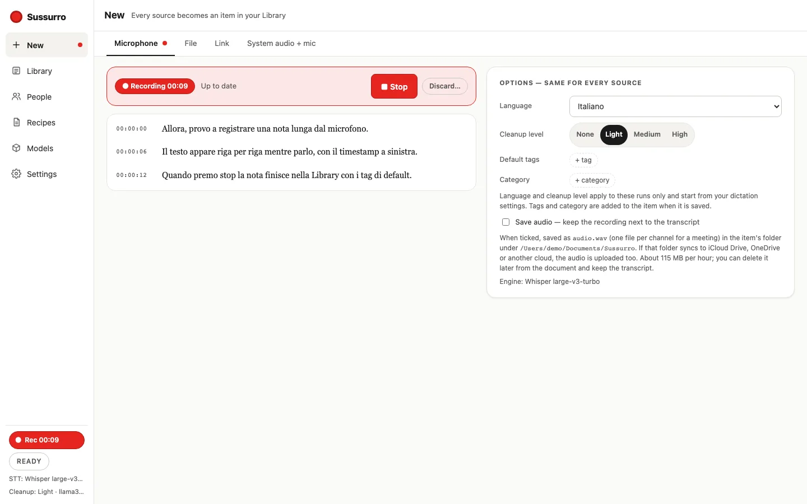
- Optionally type a Title (otherwise the first words become the title).
- Click Start recording. Sussurro transcribes while you speak, a segment at a time, and the item already appears in the Library marked Recording.
- Click ■ Stop. The note is saved; Open in Library takes you to it.
Discard… asks first, then moves what was transcribed to the trash. If Sussurro stops in the middle of a session (a crash, a shutdown), the item keeps what was transcribed until then and is marked Interrupted.
Meeting in the room. Tick Meeting in the room when several people share this microphone. The item is saved as a Meeting and voices are told apart as Voice 1, Voice 2… (see Speakers). Because it records other people, the recording notice appears first.
File
{kind=link}
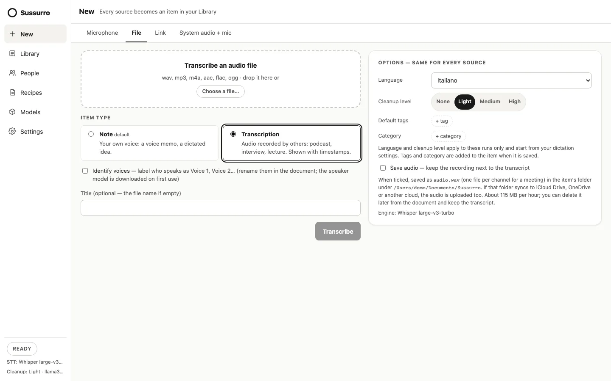
- Drop an audio file on the window or click Choose a file… — wav, mp3, m4a, aac, flac or ogg.
- Choose the Item type: Note (default — a voice memo, a dictated idea) or Transcription (audio recorded by others, shown with timestamps). For a transcription you can tick Identify voices to label speakers as Voice 1, Voice 2… (the speaker model downloads on first use).
- Optionally a title (the file name if empty), then Transcribe. A progress bar shows how far it got; Cancel stops and saves nothing.
Long files are read from disk as a stream, so memory stays flat even for an hour of audio. One file, one link and one recording can run at the same time.
More: The archive: notes, meetings and transcriptions · transcribe audio files
↑ ContentsChapter 4Transcriptions from links
New → Link transcribes a direct link to an audio or video file, or a page on a video platform through yt-dlp. The result is a Transcription whose source is the link.
{kind=link}
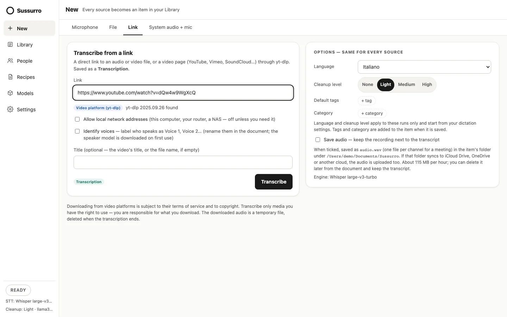
- Direct media — a link ending in a media file (mp3, wav, m4a, mp4, mov, flac, ogg, opus, webm, mkv…) — is downloaded by Sussurro itself. Nothing to install.
- Video platforms — YouTube, Vimeo, Dailymotion, Twitch, SoundCloud, Mixcloud, Bandcamp, TikTok, X/Twitter, Facebook, Instagram, Rumble, Bilibili, TED, Streamable and Odysee — go through
yt-dlp, which is not bundled. Sussurro finds it on your PATH or in the usual package-manager folders; install it withbrew install yt-dlp(macOS),winget install yt-dlp.yt-dlporscoop install yt-dlp(Windows, then restart Sussurro),sudo apt install yt-dlporpipx install yt-dlp(Linux — distribution packages can be old). Pages on other sites are refused.
The run has two steps, Download then Transcribe. The download is a temporary file in the app data folder, deleted when the transcription ends however it ends; Cancel deletes it too. The title is yours, else the video's title, else the file name.
- Allow local network addresses (off by default, per run): links to this computer, your router or a NAS are refused unless you tick it. The check covers every address a name resolves to and every redirect.
- Identify voices: decide now — the download is deleted afterwards, so voices can't be identified later without transcribing the link again.
- Limits: 2 GB per download; videos whose only audio track is Opus or AC-3 are refused, since no ffmpeg is bundled; system proxy settings are ignored.
Downloading from video platforms is subject to their terms of service and to copyright. Transcribe only media you have the right to use.
More: Transcribe from a link
↑ ContentsChapter 5The archive and the Library
Every note, meeting and transcription is a folder of plain files in your archive. The files are the source of truth: the Library is a view on them, and you can open, sync, back up or edit them with anything.
Where it is
By default Documents/Sussurro (the system's Documents folder; on Linux without XDG folders, ~/Documents/Sussurro). Settings → Archive shows the path, with Change…, Use the default and Show in Finder (Explorer, file manager). Changing it does not move items already saved: they stay in the old folder until you move them yourself.
{kind=link}
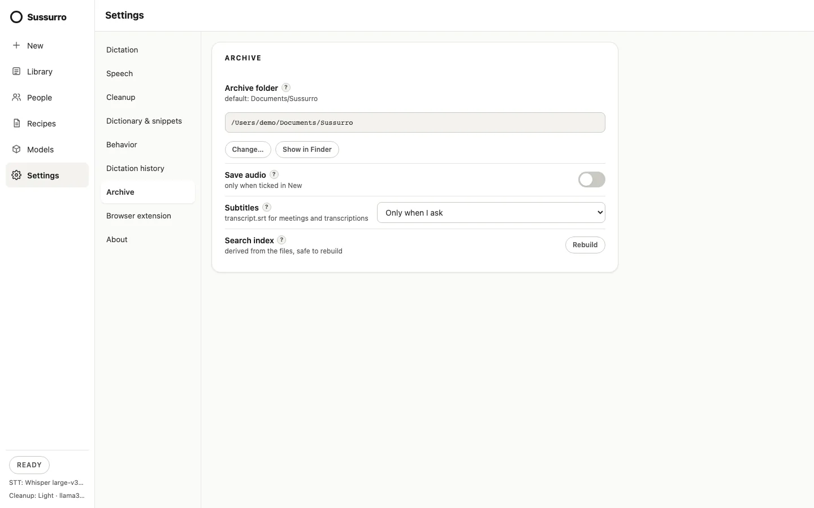
What's in a folder
Documents/Sussurro/
.sussurro/people.json the People registry
2026/09/2026-09-25-weekly-sync-release/
transcript.md frontmatter + the transcript
document.md written by the Formatted document recipe
summary.md, action-items.md, … other recipes and saved answers
transcript.srt subtitles, when created
audio-mic.wav, audio-remote.wav only with Save audio (audio.wav for one channel)
.sussurro/ segments, word timings, voice data, hashesThe folder name is the date plus the title, made safe for every OS; renaming the item later doesn't rename the folder.
Frontmatter
transcript.md starts with YAML metadata, then # Title and the text. Notes are paragraphs; meetings and transcriptions have one line per segment, like **[00:00:05] Anna Rossi:** …. For example:
---
type: meeting
title: Weekly sync — release
date: 2026-09-25T09:30:00+02:00
duration: 00:42:10
source: browser:meet.google.com
language: it
engine: whisper-large-v3-turbo-q5_0
tags:
- release
categories:
- team
participants:
- name: Anna Rossi
email: anna@example.com
- name: Voice 1
---type:note,meetingortranscription.source:mic,file:<name>,url:<link>,browser:<site>orsystem.- Sussurro also writes
status: recordingorstatus: interruptedwhile those apply, andaudio:when audio is saved. Keys it doesn't know — Obsidian'saliases, say — are kept when it rewrites the file. - Notes never have participants or speakers.
The Library
- Search the title, the text, tags, categories and participants (names and emails); matches are highlighted.
- Filter by type (Notes, Meetings, Transcriptions) and with the Tag, Category, Participant and Date menus. Values within one filter are alternatives; different filters combine. Date offers Today, This week (from Monday), This month, This year, Older and a custom range. Filters are remembered.
- Badges: ● Recording, Interrupted, ✎ Edited outside, ↗ Sent externally (text went to an external LLM; the hosts are in the tooltip) and the size of saved audio.
Editing an item
- Click the title to rename. Add or remove tags, categories and, on meetings and transcriptions, participants (a participant who matches someone in People gets their email).
- Each transcript line has Edit (⌘/Ctrl+Enter saves, Esc cancels), Delete (click twice) and, where there are speakers, Move to speaker…. Sussurro keeps both the raw and the cleaned text of each line.
- Open folder shows the item in your file manager. Delete… moves the whole folder to the system trash — nothing in the archive is ever deleted for good, and there is no automatic clean-up of old items.
Edits made outside Sussurro
Sussurro remembers a hash of every transcript.md it writes. If the file changed since — you edited it in Obsidian or a text editor — your version wins: the item is marked Edited outside Sussurro, line editing is turned off, and Sussurro never rewrites the body. Title, tags, categories and participants still update the frontmatter only. The same rule protects recipe documents (a re-run writes -2.md beside your edited copy) and transcript.srt.
The search index
Search runs on an index in the app data folder (archive-index.sqlite), built from the files and kept up to date as they change. It is derived data: Settings → Archive → Rebuild recreates it at any time. If it can't be read, the Library falls back to matching titles and tags.
More: The archive: notes, meetings and transcriptions
↑ ContentsChapter 6Recipes, Ask and LLM profiles
A language model does three jobs in Sussurro: cleanup of what you dictate or record, recipes that write documents from a transcript, and Ask, which answers questions about one. Each runs on an LLM profile you choose.
LLM profiles
A profile is a server, a model and an optional API key. Sussurro speaks two APIs: Ollama (native) and OpenAI-compatible /v1 — which covers llama.cpp's llama-server, LM Studio, DS4, Ollama's own /v1 and hosted services. Manage them under Recipes → LLM profiles: Add profile, then Name, API, Server, API key (OpenAI-compatible only), Model, Test connection (it lists the server's models) and Context window.
{kind=link}
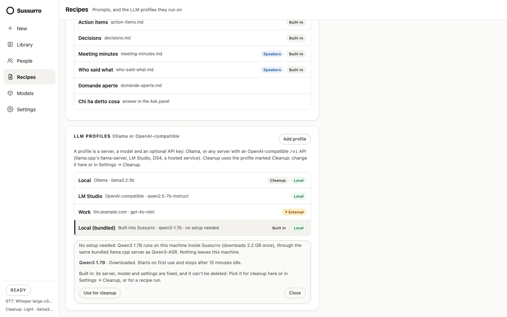
- The default Local profile is Ollama at
http://localhost:11434withllama3.2:3b. - Local or external: a profile is local only when its server is
localhost, a loopback address or a.localhost. Everything else — a hosted service, but also another computer on your network — is external: text sent to it leaves this computer. You can tick or untick External by hand; changing the server address works it out again. - API keys are kept in the system's credential store (macOS Keychain, Windows Credential Manager, a Secret Service keyring on Linux), not in the settings file. Without a working store the key is saved in
settings.jsonand the editor says so. - Context window: how much the model reads at once. Empty means 4096 tokens, safe for small local models; recipes split longer transcripts into parts that fit.
The bundled model
Local (bundled) is a built-in profile: Sussurro runs Qwen3 1.7B itself, on this computer, through its own copy of llama.cpp's server — nothing to install. The model (2.2 GB) is downloaded only when you ask, then checked against a pinned SHA-256. It starts on first use and stops after 15 minutes idle. It is never selected by itself: pick it with Use the bundled model (offered in the setup and in Settings → Cleanup when no server answers), Use for cleanup on its card under Models or Recipes, or choose it for a recipe run. The bundled server is reachable only by Sussurro.
Cleanup
Settings → Cleanup sets the level, Translate to and the Profile used for dictations, microphone sessions, file and link transcriptions, and the local API's /clean. Long recordings are cleaned a segment at a time, with the previous segment as context. When the server can't be reached, has no model, or the bundled model isn't downloaded, you get the raw transcript. Advanced → Cleanup prompts lets you rewrite the instructions per level.
An external cleanup profile needs an opt-in. Cleanup happens without a dialog, so choosing an external profile shows a switch, Send dictations to host for cleanup. Until you turn it on, cleanup keeps the raw text and sends nothing. The opt-in belongs to that profile and that server: pointing the profile at another host turns it off. Items cleaned this way are marked in the Library.
Recipes
A recipe is a named prompt that writes a markdown file next to the transcript (a companion document) or shows an answer in the Ask panel. Six are built in:
| Recipe | Writes | Notes |
|---|---|---|
| Formatted document | document.md | A tl;dr, headings and tables where the content is tabular. |
| Summary | summary.md | |
| Action items | action-items.md | |
| Decisions | decisions.md | |
| Meeting minutes | meeting-minutes.md | Offered only on meetings and transcriptions whose transcript names its speakers. |
| Who said what | who-said-what.md |
{kind=link}
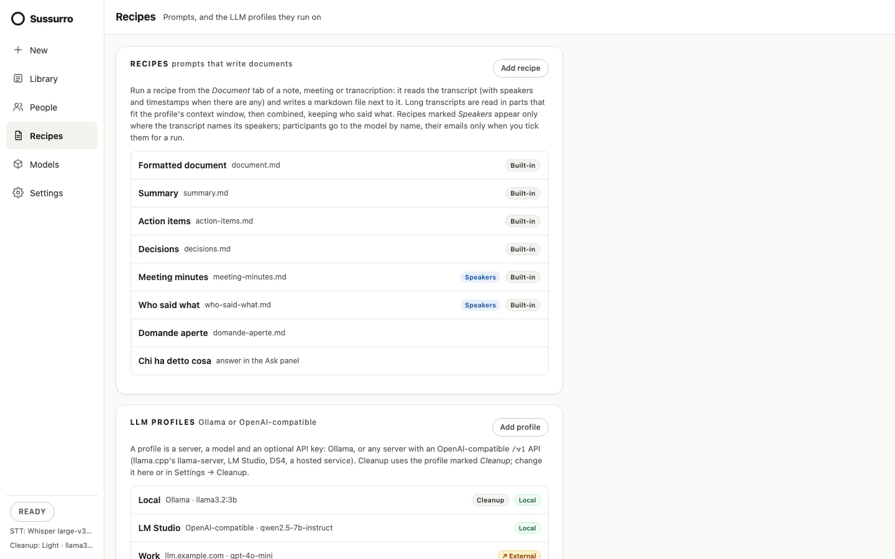
- Your own recipes: Add recipe with a Name, an Output (Document or Answer) and a Prompt in plain words. Sussurro adds the transcript, its title, date and participants, and the rules (same language, no invented facts, markdown only). Deleting a recipe keeps the documents it wrote.
- Long transcripts are read in parts that fit the profile's context window, then combined — following speaker turns when there are speakers.
- Participants go to the model by name. Their emails go only if you tick Include participant emails for that run; the tick is never remembered.
The Document tab. Pick a recipe and a profile and click Run (Regenerate if its document exists). Documents are rendered with a provenance line — recipe, profile, model, date, and ↗ External with the host when the text left the computer — and saved with the same facts in their frontmatter (generated_by, external, host). An empty tab offers Write the formatted document. A recipe run never overwrites a document you edited: it writes a new copy next to it.
{kind=link}
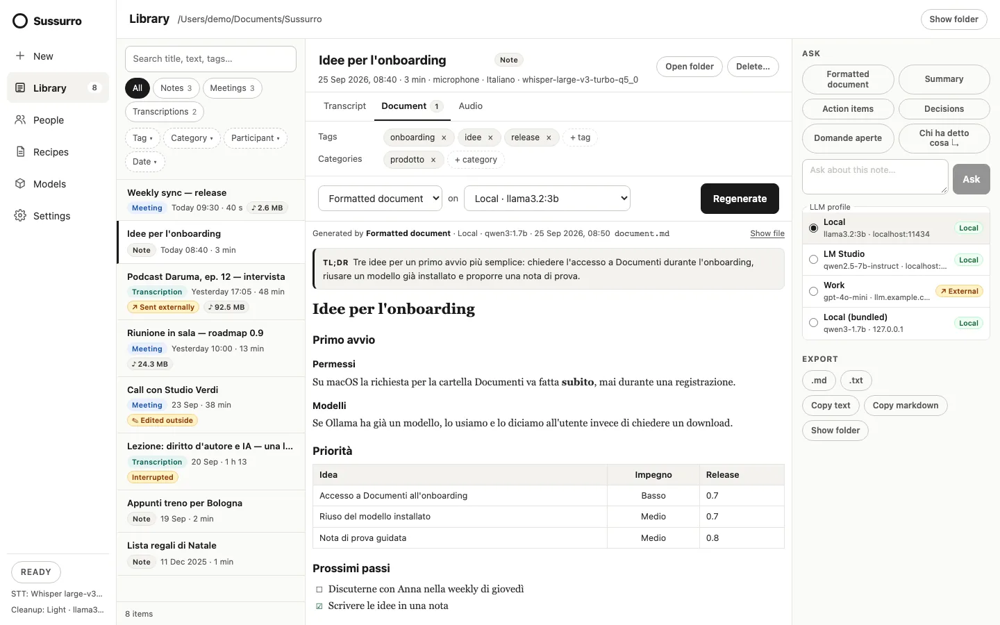
Ask
The Ask section of the context pane runs any recipe with one click or answers a question about the open item (Enter sends, Shift+Enter adds a line, up to 2000 characters). The model answers only from the transcript and, where the transcript names speakers, says who said what. Pick the LLM profile below the box — each is marked Local or ↗ External. An answer can be copied, discarded or Saved as document next to the transcript. Recipes and questions wait while an item is still recording.
External profiles and consent
Local profiles run straight away. On an external profile, every recipe run and every question first shows Send this to host?, with the document, the task, the people involved, the size in characters and tokens, the server and the model. Cancel is the default and sends nothing.
{kind=link}
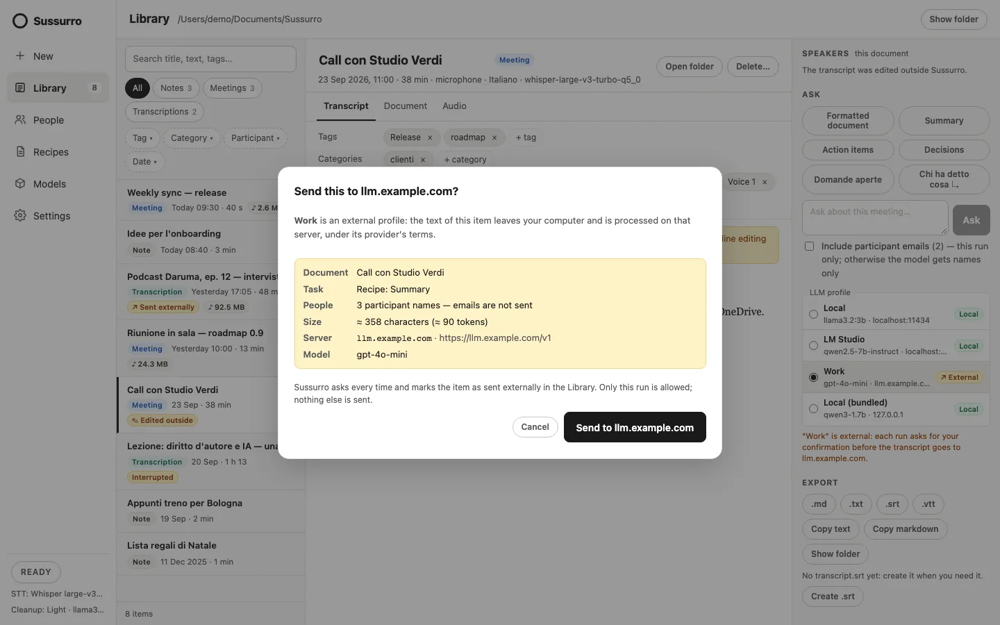
This is enforced by the app itself, not only the screen: an external run needs a one-time permission for exactly that item, recipe or question, server and model, valid once and for two minutes. There is never a silent fallback from a local profile to an external one. Each item keeps a log of external sends — date, host, profile, model and recipe, never the content — in its .sussurro/external-log.json, which drives the Library's ↗ Sent externally badge. What you send is processed under that provider's terms.
More: Recipes, LLM profiles and the privacy gate · choosing an Ollama model · any OpenAI-compatible server · how cleanup avoids hallucinations
↑ ContentsChapter 7Meetings with the browser extension
The Sussurro extension records web meetings — Google Meet, Microsoft Teams and Zoom in the browser — and streams the audio to the Sussurro app on the same computer, which transcribes it live into a Meeting. It works in Chrome, Edge and Brave (116 or later) and Firefox on the desktop (140 or later; Firefox for Android is not supported).
It works on these addresses only: Google Meet at meet.google.com; Microsoft Teams at teams.microsoft.com, teams.live.com and teams.cloud.microsoft (where work and school accounts move from 30 September 2026); and the Zoom web client, pages under zoom.us/wc/, including the meeting that Zoom shows inside them.
Install
The extension is not in the browser stores yet. Each release carries sussurro-extension-chrome-<version>.zip and, for Firefox, the add-on signed by Mozilla, sussurro-extension-firefox-<version>.xpi: use the one with the same version as your app.
- Chrome, Edge, Brave: unzip it into a folder you keep, open
chrome://extensions(edge://extensions,brave://extensions), turn on Developer mode, click Load unpacked and pick the folder. To update, replace the folder's contents and press the reload icon on the extension's card. On Brave, if the extension can't reach the app, checkbrave://settings/content/localhostAccess. - Firefox: drag the
.xpionto a Firefox window (or openabout:addons, gear menu → Install Add-on From File…) and confirm. It stays installed and updates itself when a new release is out. The unsignedsussurro-extension-firefox-<version>.zipis for development only:about:debuggingloads it as a temporary add-on, removed when Firefox quits.
If the extension has no access to a meeting site, its panel offers Allow access.
Pair it with the app
{kind=link}
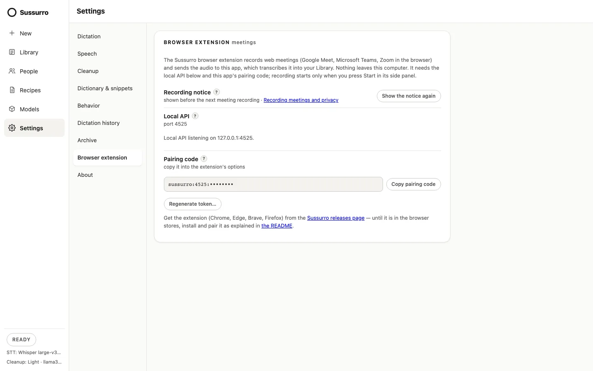
- In Sussurro, open Settings → Browser extension. The extension reaches the app through the local API on
127.0.0.1. If it is off, click Turn on the local API and restart Sussurro. - Click Copy pairing code. The code (
sussurro:<port>:<token>) goes to the clipboard; the app never shows the token. - Open the extension's options (right-click its toolbar button → Options), paste the code and click Save and test. Test connection says whether the app is reachable and the token right.
Treat the code like a password. Regenerate token… invalidates it at once: every browser you paired must then be paired again.
Record a meeting
{kind=link}
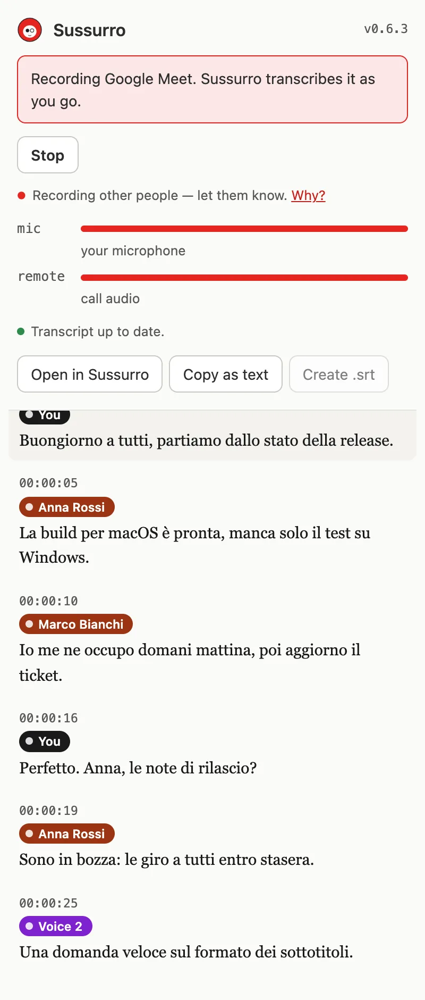
- Join the call in the browser. Click the extension's toolbar button: Chrome opens its side panel, Firefox its sidebar. It says Ready to record Google Meet (or Teams, or Zoom). If you opened the meeting before installing the extension, reload the page.
- Check the Language next to Start: the language spoken in the meeting (see below).
- Click Start recording. Nothing is captured before that. The first time, the recording notice appears. While recording, the tab's toolbar button shows a red REC badge.
- The panel shows level meters for mic (your microphone) and remote (the call), whether the transcript is up to date or a few seconds behind, and the lines as the app writes them.
- Stop — or closing the tab, or leaving the page — ends it; the app keeps what it received and saves the meeting.
The panel also has Open in Sussurro (brings the app to the front on that meeting), Copy as text and, when subtitles are set to Only when I ask, Create .srt once the recording ends (it downloads the file). If the connection to the app drops, the extension reconnects and the rest of the call becomes a new item. Audio goes only to the Sussurro app on this computer; the page's own audio is never changed or muted. During a browser meeting the overlay pill reads Recording (meeting).
The meeting's language
The side panel's Language menu, next to Start, sets the language of this meeting only — your dictation language in Settings doesn't change. It lists Auto-detect and the languages your current engine can transcribe, by their own names (Italiano, English…): about 99 with Whisper (only English with an English-only model), 25 with Parakeet, 30 with Qwen3-ASR (Cantonese and the Chinese dialects under 中文). The first time on a site it shows your dictation language; after that it remembers your last choice separately for Google Meet, Teams and Zoom, so a weekly English call on Teams and an Italian one on Meet each keep theirs. The choice is fixed once you press Start (the menu is greyed while recording) and the panel's header shows it.
The app uses it for the transcription (Whisper takes it as a hint; Parakeet and Qwen3-ASR detect the language themselves), for the cleanup's list of filler words, and as the meeting's language in its frontmatter. With Auto-detect the detected language is recorded. If the engine changed and no longer offers the chosen language, the meeting still records, in your dictation language, and the panel shows why. With an older Sussurro app the menu doesn't appear and meetings use the dictation language.
The recording notice
Recording a meeting records other people. Before the first such recording — in the extension, with System audio + mic, or with Meeting in the room — Sussurro shows You are about to record other people: depending on where you and they are, and on your organisation's rules, you may need to tell them, and some may have to agree first. Sussurro can't tell which rules apply to you. Don't show this again is ticked by default; Show the notice again in Settings → Browser extension (or in the extension's options) brings it back. A Recording other people — let them know line stays visible while you record.
Speakers
Meeting lines are labelled in three ways, from the most to the least reliable:
- You — whatever comes from your microphone channel in a browser meeting or a System audio + mic recording.
- Names from Google Meet — on Meet the extension reads the participants' names from the page and matches them to who is speaking, and the participants join the item's frontmatter. It reads only the page's structure, and when it can't read the names reliably it stops rather than guess. Meet changes its pages often, so this is the part most likely to need an update. Teams and Zoom get You and Voice N only.
- Voice 1, Voice 2… — everyone else is told apart by how they sound, with a speaker model (WeSpeaker ResNet34-LM, about 26.5 MB, CC-BY-4.0) downloaded on first use and run on this computer. It is approximate: two similar voices can merge and one voice can split.
The Speakers section of a meeting or transcription lists each voice with where it came from (mic channel, from Meet, by voice) and its share of the lines. Rename gives a voice a name in this document; Link to person… (or a suggested Link to name?) ties it to someone in People and adds them to the participants with their email; Add to People creates the person. Move to speaker… on a line fixes a single line (New voice starts another). Re-detect speakers recomputes every line's voice from the stored voice prints — lines you moved included — keeping the names you gave.
Your own voice. In a recording made with one microphone (a meeting in the room, system audio without a separate mic, a transcription with Identify voices) the Speakers section offers Record your voice: read the paragraph shown (about 30 seconds, in Italian or English) from the microphone you pick. From then on, with Label my voice as You on in Settings → Voices, the voice that sounds most like yours is labelled You at the end of a recording, after Identify voices and after Re-detect speakers; Find my voice does it for a recording made before. A speaker you named or linked to someone keeps its name, and a You you rename doesn't come back in that document. Only an averaged voice print is kept, on this computer — never the recording, and you are never added to People; Forget my voice deletes it.
Transcriptions get speakers only when you ask: tick Identify voices in New → File or Link, or click Identify voices in the Speakers section later — that re-reads the original file, so it works only on the computer that transcribed it and while the file is still where it was (links can't: their download is deleted).
People
People is your registry of names, emails and aliases, stored with the archive in .sussurro/people.json and never sent anywhere. When a participant's name matches a person's name or alias — ignoring case, accents and spacing — the participant gets that person's email. Linking only ever adds an email to a participant that has none; a name that matches two people links to nobody. Add the spellings you see in meetings (a Meet display name, a nickname) as aliases.
{kind=link}
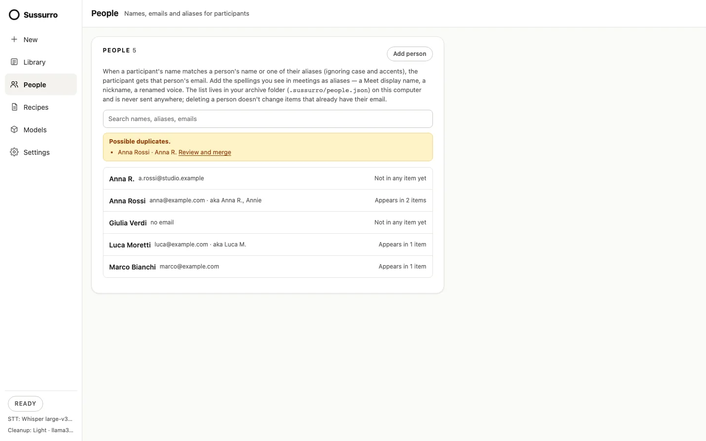
Participant chips offer + People to add someone. Deleting or editing a person never changes items that already have their email. People travel to another computer with the archive, or in a portable-config export only if you tick Include People in the export.
Known voices
Sussurro can learn the voice of someone in People so that, in a later meeting or transcription, an unlinked Voice N comes with a suggestion: Sounds like Anna · Link · Not Anna. It is off until you turn it on, person by person: open the person in People and switch on Recognise this voice. A sheet first explains what is stored (a summary of how the person sounds, not a recording), where (only on this computer, never in the archive), how to delete it, and that you should tell the person — a voice profile that identifies someone is biometric data under the GDPR.
The profile learns only from lines you linked to that person yourself. The person's entry shows how far it has got — seconds of confirmed speech and documents — and it starts suggesting at 60 seconds from 2 documents. A suggestion is never applied by itself: Link links like any other link (participant and email included); Not Anna hides it for that voice in that document, and Sussurro remembers the answer. Suggestions also appear when you open an older item from the Library.
To stop: switch Recognise this voice off or click Forget this voice on the person; Settings → Voices has Suggest names from known voices (off hides every suggestion and keeps the profiles) and Forget all voices, which also deletes your own voice. Forgetting deletes the files at once, not to the trash.
More: Record web meetings with the browser extension · Known voices: suggestions, not surveillance
↑ ContentsChapter 8System audio: calls from desktop apps
New → System audio + mic records a call in Zoom, Teams or any app that plays through the computer: your microphone and the computer's sound become two channels of one Meeting. You are You; the others are Voice 1, Voice 2…
{kind=link}
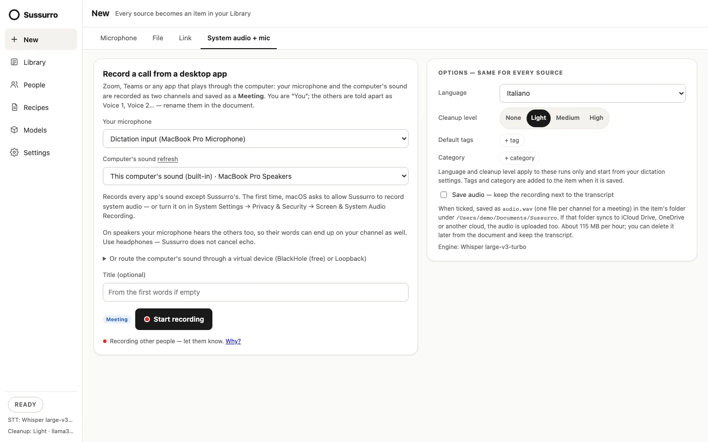
Built-in capture — This computer's sound (built-in) — needs no extra software:
- macOS 14.2 or later: records every app's sound except Sussurro's. The first time, macOS asks to allow Sussurro to record system audio; you can also turn it on in System Settings → Privacy & Security → Screen & System Audio Recording. Without that permission the recording is silent. On older macOS the option is not offered.
- Windows: records what plays on the default output device (WASAPI loopback). It has not been verified on real hardware yet.
- Linux: records the monitor of the default output through PulseAudio or PipeWire, with
pactlandparecfrompulseaudio-utils.
It follows the output that was the default when you pressed Start: if you switch outputs mid-call, start a new recording.
A virtual device works everywhere, and is the way on macOS before 14.2. Pick it as the Computer's sound:
- macOS — install BlackHole 2ch (
brew install blackhole-2ch) or Rogue Amoeba's Loopback. In Audio MIDI Setup create a Multi-Output Device with your speakers or headphones and BlackHole, and make it the sound output, so you keep hearing the call. Choose BlackHole 2ch. - Windows — install VB-Cable (or Voicemeeter) from vb-audio.com. Send the meeting app's speaker (or the Windows output) to CABLE Input; to keep hearing it, tick Listen to this device on CABLE Output (Sound → Recording → Properties → Listen). Choose CABLE Output. Some sound cards also offer Stereo Mix.
- Linux — every output has a monitor source. Expose it as an ALSA device (see docs/compile/linux.md), or pick the pulse / pipewire device and route that recording stream to “Monitor of …” in pavucontrol.
On speakers your microphone hears the others too, so their words can end up on your channel as well. Sussurro does not cancel echo.
A System audio + mic recording and a microphone session can't run at the same time — both use the microphone. The recording notice appears before the first one.
More: Record desktop calls: system audio + mic
↑ ContentsChapter 9Subtitles and exports
Meetings and transcriptions can have subtitles; every item can be exported.
- Subtitles (Settings → Archive): Only when I ask (default) or Create .srt automatically on every save. They apply to meetings and transcriptions, never to notes. The file is
transcript.srtin the item's folder; with Only when I ask, the Export section has Create .srt (or Update .srt). Each subtitle has at most two rows of 42 characters and stays up to 7 seconds; a new speaker's first subtitle starts with their name. Atranscript.srtyou edited is never overwritten. - Export (context pane): .md, .txt, .srt and .vtt for meetings and transcriptions; .md and .txt for notes — each asks where to save. The
.txtof a meeting has one line per segment,[00:12:03] Anna Rossi: …. Also Copy text, Copy markdown and Show folder. - From the browser extension: Copy as text, and Create .srt when subtitles are Only when I ask.
Chapter 10Saved audio, replay and the voice map
Sussurro keeps only the transcript unless you ask for the audio. With it, you can replay the recording — or one speaker at a time.
- Save audio: tick it in New before you start, or turn it on for every new item in Settings → Archive (it also covers browser meetings). The audio is saved as mono 16 kHz WAV in the item's folder:
audio.wav, or one file per channel (audio-mic.wav+audio-remote.wavfor a browser meeting,audio-mic.wav+audio-system.wavfor System audio + mic). About 115 MB per hour. - Cloud sync: if the archive syncs to iCloud Drive, OneDrive or another cloud, the audio is uploaded too — the option names the folder.
- Delete audio… in the item moves the audio to the trash and keeps the transcript.
- There is no hidden audio cache: an item recorded without Save audio has nothing to play.
The Audio tab
{kind=link}
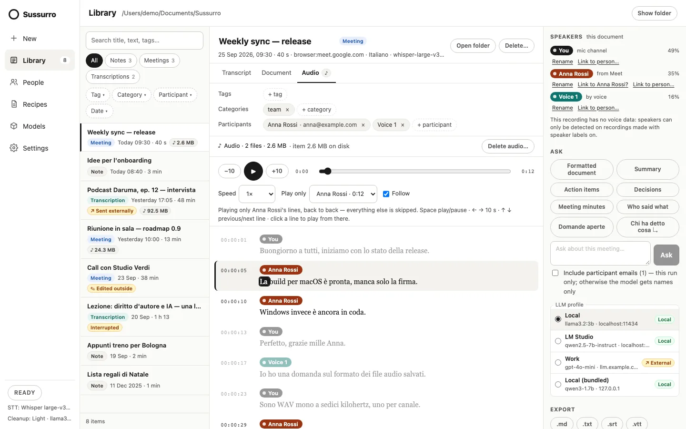
- −10 / +10 seconds, play/pause, a seek bar and Speed from 0.75× to 2×.
- Play only: All speakers, or one speaker's lines back to back — each from its own channel, so the others don't bleed in. With two channels, All speakers plays both together.
- The transcript follows the audio (Follow), lighting the current line and, where the words were timed, the current word. Click a line to play from there.
- Keys: Space play/pause, ← → 10 seconds, ↑ ↓ previous/next line.
The voice map
Meetings and transcriptions with voice data on at least two lines show a Voice map in the Speakers section: each dot is a line, placed by how the voice sounds, so a speaker's lines usually gather in one cloud. It is a flat picture of something with many more dimensions — closeness is approximate — but it makes a line in the wrong cloud easy to spot. Click a dot (or use the arrow keys and Enter) to select that line in the transcript, or to jump the player there.
{kind=link}
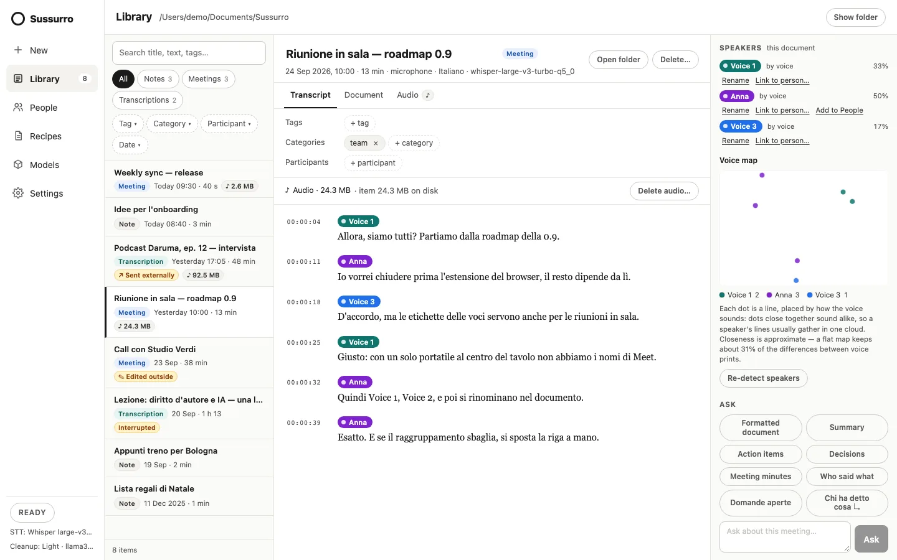
Chapter 11Qwen3-ASR, the optional engine
Besides Whisper and Parakeet, Sussurro can transcribe with Qwen3-ASR 1.7B. It is optional and never the default.
{kind=link}
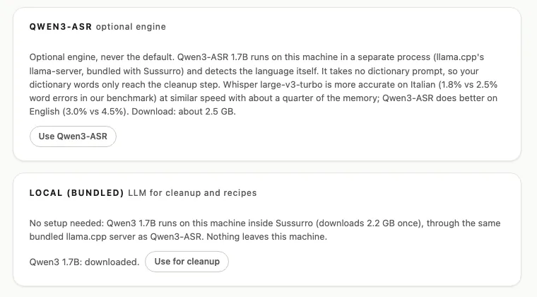
- Turn it on with Models → Use Qwen3-ASR (or the third choice of the engine picker); Back to Whisper turns it off. The model and its audio projector download once, about 2.5 GB.
- It detects the language itself and ignores the language setting. It takes no dictionary prompt: your dictionary words only reach the cleanup step.
- On our benchmark Whisper large-v3-turbo is more accurate on Italian (1.8% vs 2.5% word errors) and Qwen3-ASR on English (3.0% vs 4.5%).
- It runs in a separate process (llama.cpp's
llama-server, bundled with Sussurro), reachable only by Sussurro. Audio goes to it in pieces of at most 30 seconds; long dictations are cut at pauses. It starts when needed and stops after 15 minutes idle, when you change engine and when you quit. - If it won't start on macOS, run
xattr -cr /Applications/sussurro.apponce. If Sussurro crashes on macOS, the helper can stay running: quitsussurro-llama-serverin Activity Monitor.
Chapter 12Privacy and data locations
Speech-to-text always runs on your computer. No account, no telemetry, no analytics in the app or the extension.
What can leave the computer, and when
- Model downloads, when you choose a model: Whisper, Qwen3-ASR, the speaker model and the bundled LLM from Hugging Face, Parakeet from its own host. Each is checked against a SHA-256.
- Links you transcribe: the media is downloaded (by yt-dlp for video platforms). Nothing is uploaded.
- External LLM profiles: text — never audio — only per run with your confirmation (recipes, Ask) or with the cleanup opt-in. See consent.
- Update checks: only when you click Check for updates.
- If your archive is in a synced folder (iCloud Drive, OneDrive, Dropbox), your sync service copies it — including saved audio.
The browser extension sends audio and page events only to the Sussurro app at 127.0.0.1, with the pairing token. The helper processes for Qwen3-ASR and the bundled model are reachable only by Sussurro: a private socket on macOS and Linux, a checked loopback port on Windows, and a new random key at every start.
Where your data lives
| What | Where |
|---|---|
| Notes, meetings, transcriptions, recipe documents, subtitles, saved audio | The archive, Documents/Sussurro/YYYY/MM/<date>-<title>/ |
| People | <archive>/.sussurro/people.json |
| Settings, LLM profiles, the extension's pairing token | settings.json in the app's config folder (readable only by you on macOS and Linux) |
| API keys of LLM profiles | The system credential store, service com.sussurro.app |
| Dictation history and statistics | history.jsonl, stats.json in the app's data folder |
| Search index, paths kept for Identify voices, temporary link downloads | archive-index.sqlite, source-files.json, link-downloads/ in the app's data folder |
| Voice profiles (Recognise this voice) and your Not X answers to voice suggestions | voices/, voice_dismissals.json in the app's data folder (readable only by you on macOS and Linux) — never in the archive |
| Speech, speaker and bundled LLM models | models/ in the app's data folder, or your Models folder |
| Logs of the helper processes | llama-server.log, llama-server-llm.log in the app's log folder |
The app's folders follow each system's convention for the identifier com.sussurro.app — on macOS ~/Library/Application Support/com.sussurro.app. Delete… and Delete audio… move files to the system trash.
More: Where your data lives · Why local-first
↑ ContentsChapter 13The local API (scripting)
An HTTP API on 127.0.0.1 for your own scripts, off by default.
Turn on Local API in Settings → Behavior → Advanced (port 4525 by default; applies when Sussurro restarts), then Scripting routes in Settings → Scripting (applies at once). Turning on the local API for the browser extension does not turn on the scripting routes.
# clean up / translate a text with your current settings
curl -X POST --data "um so this is uh a test" http://127.0.0.1:4525/clean
# transcribe an audio file (wav/mp3/m4a/flac/ogg); also added to the dictation history
curl -X POST --data-binary @meeting.mp3 "http://127.0.0.1:4525/transcribe?ext=mp3"
# search your dictation history
curl "http://127.0.0.1:4525/history?n=10&q=sussurro"- Loopback only, and no token: any program on your computer can call the scripting routes while they are on — that's why they ship off.
- Web pages can't use them: requests must come for
127.0.0.1:<port>orlocalhost:<port>, and a request from a web page's origin is refused. /cleanaccepts up to 1 MiB,/transcribeup to 200 MiB. At most two of them run at once; a third gets503withRetry-After.- The extension's routes (
/app/version,/app/languages,/live,/items/…) always need the pairing token and accept only browser-extension origins;/items/…reach only meetings the extension recorded.
The archive API
Scripts can list, search, read and export your whole archive under /archive/… with a token of their own, and add a note from text (the only write in 0.11).
- In Settings → Scripting, switch on Archive API (off by default, applies at once; the local API must be on too).
- Under New token, give it the name of the script and pick its scopes: Read (items, search, exports, companion documents, people's names), only if the script needs them People's emails (participants' and People's emails), and Write to create notes (a Write-only token can add notes but read nothing).
- Copy the token: it is shown only once, and Sussurro keeps only a fingerprint of it. Put it in an environment variable, not in the script.
export SUSSURRO_TOKEN=sua_... # from Settings → Scripting
API=http://127.0.0.1:4525
# search: meetings tagged "release" since September, 20 per page
curl -G -H "Authorization: Bearer $SUSSURRO_TOKEN" "$API/archive/items" \
--data-urlencode "q=roadmap" -d type=meeting -d tag=release -d from=2026-09-01 -d limit=20
# the next page: send back next_cursor (null on the last page)
curl -G -H "Authorization: Bearer $SUSSURRO_TOKEN" "$API/archive/items" -d limit=20 -d cursor=...
# one item: frontmatter, text, speakers and timed lines (ids contain slashes)
curl -H "Authorization: Bearer $SUSSURRO_TOKEN" "$API/archive/items/2026/09/2026-09-24-weekly-sync"
# export as md, txt, srt or vtt
curl -H "Authorization: Bearer $SUSSURRO_TOKEN" -o sync.srt \
"$API/archive/items/2026/09/2026-09-24-weekly-sync/export?format=srt"
# companion documents (recipe output), then one of them
curl -H "Authorization: Bearer $SUSSURRO_TOKEN" "$API/archive/items/2026/09/2026-09-24-weekly-sync/documents"
curl -H "Authorization: Bearer $SUSSURRO_TOKEN" "$API/archive/items/2026/09/2026-09-24-weekly-sync/documents/document.md"
# People: names and aliases; emails only with the People's emails scope
curl -H "Authorization: Bearer $SUSSURRO_TOKEN" "$API/archive/people"| Route | Returns |
|---|---|
GET /archive/items | A page of items: id, type, title, date, tags, categories, participants' names, a snippet for a text search. total and next_cursor; facets with facets=true. |
GET /archive/items/{id} | The frontmatter (meta), the transcript text, the speakers (id and label) and the lines with their times. |
GET /archive/items/{id}/export?format=md|txt|srt|vtt | The same exports as the Export menu, as a file. Notes have no subtitles. |
GET /archive/items/{id}/documents, …/documents/{name} | The companion documents (recipe output and saved answers). |
GET /archive/people | The People registry: id, name, aliases; email with the People's emails scope. |
POST /archive/items (Write) | Creates a note from text: 201 with Location, the new item's id, location, title, date, source, tags and categories. |
Filters of /archive/items: q (full text), type, tag, category and participant_key (repeat them for “any of”; participant keys come from the facets), participant (an exact name), from and to (YYYY-MM-DD), date (today, week, month, year, older; send your local today=), limit (1–200, 50 by default) and cursor. An unknown parameter is a 400, so a typo never widens a search.
- Every error is JSON with a
codea script can check:unauthorized(401: no token, or a wrong or revoked one),insufficient_scope(403),archive_api_off,origin_refused,not_found,invalid_id,bad_request,bad_cursor,rate_limited(429, withRetry-After),busy(503); creating a note has a few more (below). - Never served, whatever the token: speaker embeddings, voice profiles, saved audio, file paths and anything from the app's own data folder.
- Without the People's emails scope, emails are left out of items and of the
.mdexport's frontmatter, and neitherqnorparticipantcan match one — so a script can't test whether an address is in your archive.qthen doesn't look at participants: useparticipant=for a name. - Browsers are refused, extensions included, and no CORS header is ever sent: the archive API is for scripts only. The token goes in the
Authorizationheader, never in the URL. - Bounded: a token gets a burst of 60 requests, then 10 per second; a page holds at most 200 items; an answer is at most 16 MiB; at most two archive requests run at once, so a busy script never stalls the browser extension.
- Revoke a token in Settings → Scripting: the very next request with it gets a
401. Each token shows when it was last used, so you can tell whether a script still needs it.
A note from text
# a note from text (Write scope); curl 7.82 or later for --json
curl --json '{"title": "Idea", "text": "Try the release on Linux first.", "tags": ["idea"]}' \
-H "Authorization: Bearer $SUSSURRO_TOKEN" "$API/archive/items"
# → 201 Created, Location: /archive/items/2026/09/2026-09-25-idea
# the clipboard → a note (macOS pbpaste; Linux: wl-paste, or xclip -o -selection clipboard)
pbpaste | jq -Rs '{text: ., tags: ["clipboard"]}' |
curl -sS --retry 3 --json @- -H "Authorization: Bearer $SUSSURRO_TOKEN" \
-H "Idempotency-Key: $(uuidgen)" "$API/archive/items"The body is JSON (Content-Type: application/json, UTF-8, at most 1 MiB): text (required; paragraphs are split on blank lines), title (otherwise the first words of the text), tags and categories (lists of up to 50), and cleanup (true to clean it like a dictation). An unknown field is a 400. The note is an ordinary archive item — type: note, source: api:<token name>, dated now, no audio, no speakers — and appears in the Library at once.
- Cleanup only on a local profile. When Settings → Cleanup uses a profile whose server is off this computer,
cleanup: trueis refused (409,cleanup_external) — even if you allowed that profile for dictation: that consent is given in the app for the app's own sends, and a script can't give it. With cleanup off it is409cleanup_off. Withoutcleanupnothing leaves the app. Cleanup takes at most 64 KiB of text (413,too_long_for_cleanup). - Idempotency-Key (optional; 1–255 visible ASCII characters, a UUID is fine): the same key with the same body within an hour answers the note it created before (
"replayed": trueandIdempotent-Replayed: true) instead of adding another, so retrying after a timeout never duplicates a note. The same key with another body is a422(idempotency_mismatch); a key whose first request is still running is a409(idempotency_in_progress). Keys are per token and kept in memory: restarting Sussurro forgets them. - A creation limit on top of the token's own: a burst of 10 notes per token, then 30 a minute; for all tokens together a burst of 30, then 60 a minute (
429,rate_limited,Retry-After). A runaway script can't fill your archive. - Other errors:
invalid_json,bad_request,unsupported_media_type(415: sendapplication/json),too_large(413),invalid_idempotency_key.
macOS Shortcuts: Get Clipboard, then Get Contents of URL with the URL http://127.0.0.1:4525/archive/items, Method POST, a header Authorization = Bearer sua_…, and Request Body JSON with a text field set to the clipboard. Shortcuts has no environment variables, so the token is stored in the shortcut: give it the Write scope only. Or run the pipeline above in Run Shell Script with the token from the Keychain (store it once with security add-generic-password -a "$USER" -s sussurro-archive -w, read it with security find-generic-password -s sussurro-archive -w).
More: The local API
↑ ContentsChapter 14Troubleshooting
When something is off, Settings → Dictation shows a setup banner with what is missing. When dictation feels slow, Settings → Diagnostics shows where the time goes and whether the model runs on the GPU. For a bug report, Copy diagnostics (in Diagnostics or About) copies the details and those numbers (never your transcripts, API keys, People or your home folder's name).
- The shortcut does nothing
- Another app may own the same combination: record a different one in Settings → Dictation. On Linux, some Wayland desktops block global shortcuts: the Dictate button and the tray still work. A single letter can't be a shortcut.
- Nothing is pasted
- macOS: allow Sussurro under Privacy & Security → Accessibility (macOS may ask to reopen it). Linux X11: install
xcliporxsel. Linux Wayland: installwl-clipboard, and accept the desktop's keyboard-access prompt — or installwtype(wlroots, KDE) orydotoolwith its daemon (any desktop, GNOME included). KDE may ask again after a reboot. - “Microphone access denied” or no input device
- Allow the microphone in the system's privacy settings (on Windows, Let desktop apps access your microphone), then pick it in Settings → Dictation → Microphone and use Test.
- “Model not downloaded”
- Open Models and download the selected model — or switch to one marked installed.
- The text isn't cleaned up
- You get the raw transcript whenever the cleanup server can't be used: Ollama not installed or not running (start the app, or
ollama serve), no model on the server (ollama pull llama3.2:3b), the bundled model not downloaded yet, or an external cleanup profile without its opt-in. The level may also be None. Recipes → LLM profiles → Test connection checks a server. - macOS: the archive folder can't be created
- Sussurro was refused access to Documents. Allow it under Privacy & Security → Files and Folders (the setup's Open Files and Folders link), or choose another folder with Change….
- Qwen3-ASR or the bundled model won't start
- On macOS run
xattr -cr /Applications/sussurro.apponce. On Windows, an antivirus may have blockedsussurro-llama-server.exe. The helper's log isllama-server.log(llama-server-llm.logfor the bundled model) in the app's log folder. - A link won't transcribe
- “Links to video sites need yt-dlp”: install it (see Links) and try again. A link to your own network needs Allow local network addresses. Videos with only Opus or AC-3 audio, pages outside the supported platforms and downloads over 2 GB are refused. yt-dlp breaks when sites change: update it.
- The extension says Sussurro is not reachable
- Check that the app is running and that Settings → Browser extension says the local API is listening — after turning it on, restart Sussurro. “Wrong token”: pair again with a fresh Copy pairing code. “Different versions”: install the extension from the same release as the app. On Brave, allow localhost access. On Firefox, install the signed
.xpi: a temporary add-on is gone after a restart. - “Open a Google Meet, Microsoft Teams or Zoom web call”
- The panel doesn't see a meeting in this tab: reload the meeting page (it was open before the extension), or click Allow access if offered — Firefox asks again after an update adds an address, such as
teams.cloud.microsoft. Zoom works only in its web client. - Meet names are missing
- When the extension can't read the names reliably it falls back to Voice N rather than guess; Meet's pages change often. Teams and Zoom always get You and Voice N. Rename voices or link them to People afterwards.
- Voices are mixed up
- Move single lines with Move to speaker…, or use Re-detect speakers. Voice labels are approximate, especially with short turns or similar voices.
- System audio records silence
- macOS: allow Sussurro under Privacy & Security → Screen & System Audio Recording. Built-in capture missing on macOS: it needs 14.2 or later — use BlackHole. Linux: install
pulseaudio-utils. With a virtual device, check that the call's sound is actually routed to it. - Your words are also on the others' channel, or theirs on yours
- Use headphones: Sussurro does not cancel echo.
- Line editing is off
- The item is still recording (it opens when the session ends), or
transcript.mdwas edited outside Sussurro — then the file wins; see Edits made outside Sussurro. - “Search index unavailable”
- Settings → Archive → Rebuild. The index is rebuilt from the files; nothing is lost.
Chapter 15FAQ
- Does anything go to the cloud?
- Not unless you choose an external LLM profile and confirm the run (or opt in for cleanup) — and then only text. Audio is transcribed on your computer. See Privacy.
- Does it work offline?
- Yes, once the models are downloaded — as long as your cleanup profile is local (or cleanup is off).
- Do I need Ollama?
- No. Cleanup, recipes and Ask need an LLM, but it can be Ollama, LM Studio, a llama.cpp server, any OpenAI-compatible server, or the bundled model with nothing to install. Without one, dictation and transcription still work and give you the raw text.
- Where are my notes, and can I use Obsidian?
- In
Documents/Sussurro, as markdown with YAML frontmatter. Point Settings → Archive → Change… at a folder inside your vault; edits you make there are respected. - Why aren't my dictations in the Library?
- Hotkey dictations are pasted where you type and kept in the dictation history (Settings → Dictation history). The Library holds what you record or transcribe from New and the extension.
- Where did command mode go?
- It was removed in 0.10: use your system's voice control (Voice Control on macOS, Voice Access on Windows 11). Spoken formatting commands inside a dictation (“new line”, “scratch that”) still work.
- Which speech engine should I use?
- Whisper Large v3 Turbo is the default and the most accurate on Italian; Parakeet is much faster on computers without a strong GPU; Qwen3-ASR does better on English but takes no dictionary. See Speech models.
- Does it run on Intel Macs?
- No: macOS builds are Apple Silicon only (the ONNX Runtime used for Parakeet and speaker labels has no Intel build).
- Does Sussurro recognise the same person across meetings?
- Not yet. Voices are told apart within one recording; link them to People to carry names and emails over.
- Is the extension in the Chrome Web Store or Firefox Add-ons?
- Not yet: install it from the release files — the Chrome zip, or the Firefox
.xpi, which Mozilla signs without listing it (see Install). - Can I record video?
- No — Sussurro works with audio only.
- Is it free?
- Yes, free and open source under the AGPL-3.0. The code is on GitHub, where you can also report issues.